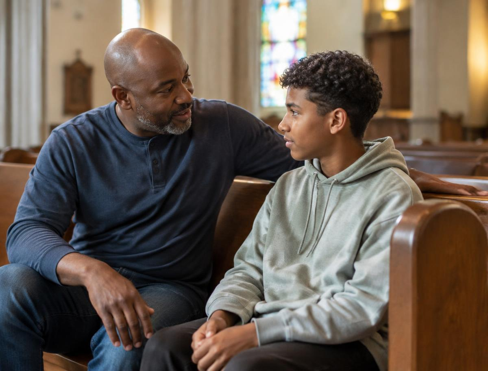

Discordar faz parte da vida. Saber transformar uma briga em acordo é uma arte — e pode ser aprendida. Tudo o que você precisa para resolver conflitos está aqui.
Conflito é uma situação de desacordo ou choque entre duas ou mais pessoas, grupos ou nações que têm interesses, necessidades, opiniões, valores ou objetivos diferentes — ou que acreditam tê-los. A palavra vem do latim conflictus, que significa “choque”, “embate”.
Um conflito, por si só, não é bom nem mau. Ele é natural em qualquer convivência. O que define se ele vai destruir ou fortalecer um relacionamento é a forma como lidamos com ele: com agressão e fuga, ou com diálogo e respeito.
Dois irmãos discutem porque ambos querem usar o computador ou o celular no mesmo horário; ou os pais e o filho divergem sobre o horário de voltar para casa.
Um amigo conta a outros um segredo que lhe foi confiado, e o grupo se divide; ou a turma não concorda sobre qual atividade fazer no fim de semana.
Num trabalho em grupo, um aluno não faz sua parte e os outros se sentem injustiçados; ou acontece uma situação de bullying no recreio.
Moradores de dois bairros disputam o uso de uma quadra pública; ou vizinhos brigam por causa de barulho, lixo ou divisa de terreno.
Disputas por território, fronteiras, rios e recursos naturais, ou guerras comerciais e diplomáticas — como as tensões entre nações vizinhas por uma região de fronteira.
Resolução de conflitos é o conjunto de atitudes, técnicas e processos usados para encerrar um desacordo de forma pacífica, justa e duradoura.
O objetivo não é descobrir “quem ganhou”, e sim chegar a uma solução em que as necessidades de todos sejam consideradas — o famoso ganha‑ganha. Envolve comunicação respeitosa, empatia, escuta, controle das emoções, busca de alternativas e compromisso com o acordo feito.
Converse com seu instrutor ou conselheiro sobre estas causas prováveis. Identificar a raiz é metade da solução.
Mensagens mal interpretadas, fofocas, boatos, tom agressivo, falta de informação ou ordens pouco claras.
Culturas, crenças, opiniões e temperamentos diferentes geram choques quando falta respeito e tolerância.
Notas, cargos, promoções, atenção do professor, materiais, salas, horários e reconhecimento.
Não saber quem faz o quê, divisão injusta de tarefas, metas conflitantes e regras aplicadas de forma desigual.
Outras causas para a conversa: estresse e sobrecarga, preconceito e discriminação, competição exagerada, ciúme e inveja, abuso de autoridade e bullying.
Antes de chegar a um tribunal (ou a uma briga), existem métodos mais rápidos, baratos e humanos. Eles se diferenciam principalmente por quem decide e pelo papel do terceiro.
As próprias partes conversam diretamente, trocam propostas e fazem concessões até chegarem a um acordo bom para ambas.
Exemplo: dois irmãos combinam que um usa o videogame até as 18h e o outro depois disso.Um terceiro neutro (mediador) ajuda as partes a dialogarem e entenderem os interesses umas das outras. Ele não sugere nem impõe soluções: as próprias partes as constroem. Ideal quando há relacionamento contínuo.
Exemplo: o conselheiro ajuda dois desbravadores da unidade, que brigaram, a conversarem e retomarem a amizade.Um terceiro imparcial (conciliador) participa de forma mais ativa: propõe soluções e orienta as partes, mas a decisão final continua sendo delas. Usada em conflitos pontuais, sem vínculo anterior.
Exemplo: no Procon ou no Juizado, um conciliador sugere que a loja troque o produto com defeito e o cliente aceita.As partes escolhem, de comum acordo, um árbitro especialista e se comprometem a aceitar a decisão dele (sentença arbitral), que tem força obrigatória. No Brasil, é regulada pela Lei 9.307/1996.
Exemplo: duas empresas em disputa sobre um contrato levam o caso a uma câmara de arbitragem, que dá o veredito.A dramatização (ou role‑play) é uma dinâmica em que os participantes representam, como numa pequena peça, uma situação de conflito real ou imaginária. Cada um assume um papel — às vezes o da pessoa com quem tem dificuldade — e a cena é encenada, interrompida e discutida em grupo.
Cena 1: No acampamento, Lucas não encontra seu lenço e acusa Pedro, na frente de todos, de tê‑lo pegado. Pedro reage gritando. Cena 2: O conselheiro pausa a cena e pergunta à plateia: “O que cada um está sentindo?”. Cena 3: Os atores trocam de papel e refazem a cena: Lucas fala em particular, usando “eu me senti…” em vez de acusar; Pedro ouve, explica e ajuda a procurar. O lenço aparece na mochila de Lucas, ele pede desculpas e os dois se abraçam. Discussão final: o que mudou entre a primeira e a segunda versão?
“Todo homem seja pronto para ouvir, tardio para falar, tardio para se irar.”Tiago 1:19
Ouvir atentamente — ou escuta ativa — é prestar atenção total à outra pessoa, com o objetivo de compreender o que ela diz e sente, e não apenas de responder. É escutar com os ouvidos, os olhos e o coração.
Vamos aplicar o método a um dos exemplos lá do começo: o conflito na família — Ana (14) e Bruno (12) brigam todos os dias pelo uso do único computador da casa.
Escolher um momento calmo e um lugar neutro, longe de distrações. Definir regras básicas: falar um de cada vez, sem gritos, xingamentos ou acusações, e com vontade sincera de resolver.
Cada parte conta sua versão e seus sentimentos usando frases com “eu”. Os outros ouvem atentamente, fazem perguntas e repetem o que entenderam. Buscar fatos, não suposições.
Descobrir o problema real e os interesses por trás das posições. Definir juntos, numa frase, qual é a questão a resolver — sem culpar ninguém.
Fazer uma “chuva de ideias”: listar todas as possibilidades, sem criticar. Depois, avaliar prós e contras de cada uma e ver quais atendem às necessidades de ambos.
Escolher juntos a melhor opção, com concessões dos dois lados. Deixar o acordo claro (talvez por escrito), definir prazo para testar e combinar uma nova conversa para avaliar.
Alguns conflitos são grandes demais para serem resolvidos sozinhos: envolvem violência, abuso, ameaças, depressão, uso de drogas, ou se arrastam há muito tempo sem solução. Nesses casos, o caminho certo é encaminhar a pessoa a um profissional ou ao pastor.
⚠️ Se houver risco imediato à vida ou à segurança, avise na hora um adulto responsável ou ligue 190 (Polícia), 188 (CVV) ou Disque 100 (Direitos Humanos).

Jesus ensina a tomar a iniciativa e procurar a pessoa em particular, com humildade e amor, para conversar diretamente — sem fofoca, sem expor ninguém em público. O objetivo não é vencer a discussão, mas ganhar o irmão, restaurando o relacionamento. Só se isso não funcionar, levam‑se uma ou duas testemunhas e, depois, a igreja (v. 16‑17).
No grande conflito entre o bem e o mal, o pecado separou a humanidade de Deus. Jesus é o único Mediador: sendo Deus e homem ao mesmo tempo, Ele reconcilia os dois lados, entregando a própria vida como resgate por todos. Ele não só intermedia — Ele paga o preço da paz.
Moisés intercedeu diante do faraó pela libertação de Israel e, no Sinai, pediu perdão a Deus pelo povo (Êx 32:11‑14, 30‑32). Também se destacam Ester, que arriscou a vida diante do rei Assuero pelo seu povo (Ester 4‑8); Abigail, que acalmou Davi e evitou uma tragédia (1 Sm 25); e Daniel, que intercedia entre os reis da Babilônia e os judeus.
O Brasil tem uma lei só para a mediação: a Lei 13.140/2015. E o Código de Processo Civil de 2015 incentiva audiências de conciliação antes dos processos judiciais.
A Organização das Nações Unidas foi criada em 1945, logo após a Segunda Guerra Mundial, justamente para mediar conflitos entre países e manter a paz mundial.
Nelson Mandela e Frederik de Klerk ganharam o Nobel da Paz de 1993 por negociarem o fim do apartheid na África do Sul sem uma guerra civil.
Estudos de neurociência sugerem que a onda química da raiva no corpo dura cerca de 90 segundos. Respirar fundo e esperar antes de responder realmente funciona!
Povos indígenas da América do Norte usavam o “bastão da fala”: só quem o segurava podia falar, e todos os outros ouviam em silêncio. Uma ótima dinâmica para sua unidade.
No Sermão do Monte, Jesus disse: “Bem‑aventurados os pacificadores, porque eles serão chamados filhos de Deus” (Mateus 5:9).